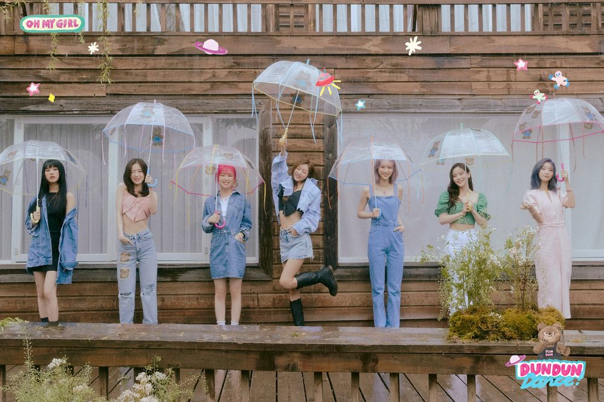

- 오마이걸
- ONF
- B1A4
데뷔일:2015년 04월21일

멤버:아린,지호,효정,승희,미미,비니,유아
2015년 4월 21일 데뷔한 WM엔터테인먼트 소속 7인조 걸그룹이다.
그룹명은 대중들의 마이걸이 되기 위해 오마이걸로 지었다고 한다.
멤버는 나이 순으로 효정, 미미, 유아, 승희, 지호, 비니, 아린이다. 리더는 연장자인 효정이 맡게 되었다.
K-POP 차세대 대표주자 중 하나인 걸그룹으로 꼽히고 있다.
앨범
1집:큐피드
2집:클로저
3집:핑크오션
4집:윈디데이
5집:내 얘길 들어봐
6집:컬러링
7집:비밀정원
8집:불꽃놀이
9집:다섯번째 계절
10집:번지
11집:논스탑
12집:던던댄스
컨셉
2010년대에 다시 생겨난 청순 컨셉 붐의 시류에 맞추어, 데뷔 초에는 여타 걸그룹과 비슷한 컨셉으로 데뷔했으나 이후 끝없이 다양한 컨셉을 소화하면서 자신들만의 아이덴티티인 청순몽환 컨셉의 이미지를 얻었다.
오마이걸의 디스코그래피를 살펴보면 청순이라는 카테고리 내에서 몽환적인 컨셉, 발랄한 컨셉 이 두가지를 넘나들며 성장해왔다.
오마이걸의 주축 컨셉인 "청순몽환"의 경우 , <비밀정원>, <다섯 번째 계절>이 있는데,
이 곡들은 오마이걸의 정체성 하면 떠올리는 가장 대표적인 곡들이며 오마이걸 특유의 색채를 강하게 풍기면서도 팬덤과 아이돌 매니아들로부터 상당히 좋은 반응을 이끌어 낸 곡들이다.
발랄한 컨셉은 , , <내 얘길 들어봐>, , , 를 꼽을 수 있는데,
오마이걸의 맑고 청량함, 흥겨움을 담아 신나는 여름 노래 느낌이 들며, 8월의 노래들은 오마이걸의 성장기에 대중성을 확보하는데 큰 힘이 되어주었다.[23] 물론, 위 두 컨셉 외에도
다양한 시도를 하며 외연을 확장해 왔다. 역동적인 컨셉으로는 [24], <불꽃놀이>, , , <살짝 설렜어>가 있으며, 휘몰아치는 느낌에서 점점 무게감 있는
느낌으로 변해왔다.[25] 설렘 컨셉으로는 <한 발짝 두 발짝>, 같은 노래도 있으며, 기타 수록곡(팬송)들도 이에 포함된다. 귀여운 컨셉으로는 <바나나 알러지 원숭이>가 있으며,
뽀롱뽀롱 뽀로로와의 "뽀마이걸" 아동 컨텐츠 프로젝트 곡들이 있다.[26] 한편, 오마이걸 노래 중에는 너무 모험적이고 실험적인 시도라는 평가를 받은 노래들[27]이 많았다.
이 곡들은 한 때 성장에 저해되기도 했지만 훗날 여타 걸그룹과는 다른 오마이걸만의 차별적인 컨셉을 부여하는데 기여한 곡들이기도 하다. 이를 따로 독특한 컨셉이라 분류하기도 한다.